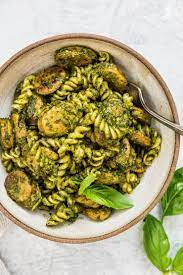

Home
Pesto Pasta with Sausage

Description
This easy, 20 minute pasta recipe is made with
Italian sausage, basil pesto, caramelized onions,
and sweet green peas.
Ingredients
- Bowtie pasta
- Italian sausage
- Onion
- Pesto
- Lemon juice
- Parmigiano-Reggiano
- Green peas
Steps
- Start your Sausage Pesto Pasta by cooking your
bow-tie pasta in some salted water until they’re
al dente. Reserve about 1/2 a cup of water to use
later, drain, and set aside.
- While the pasta is cooking, add the Italian sausage
to a hot skillet and break apart. Cook until it is
all browned, then remove from pan.
- Next, add some olive oil and the sliced onion to
the same pan and cook until caramelized, soft,
and browned.
- Add the cooked sausage back to the pan with the
onion, making sure you get any residual juices.
- Next add the frozen peas to the pan.
- Then add the pesto, reserved pasta water, and
lemon juice to create your sauce.
- Add the cooked pasta to the pan, season with some
salt and pepper, and stir it all together.
- Finish by adding the parmigiano-reggiano and
freshly cut parsley atop your pasta dish.
- Serve and enjoy your Sausage Pesto Pasta with
Onions and Peas.